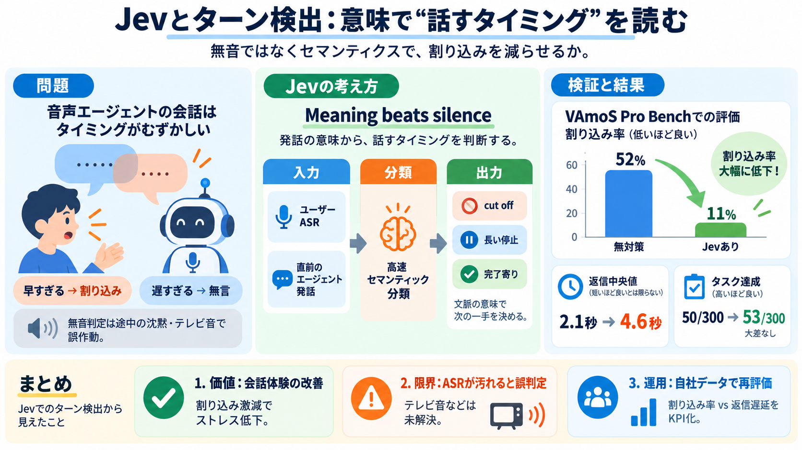

How to build semantic turn detection with Jev on top of VAD
Accuracy: Jev classified 16 of 16 test phrases correctly across both languages. Finished thoughts scored 0.82 or higher,…

Accuracy: Jev classified 16 of 16 test phrases correctly across both languages. Finished thoughts scored 0.82 or higher,…
New: Voice AI Orchestration Benchmarks — Retell, Vapi, Pipecat, LiveKit & more& more See the results Voice AITestingQAM…
AssemblyAI's Universal-3.6 Pro Realtime (universal-3-6-pro) is purpose-built for voice agents, posting a 5.19% word erro…
| 🇨🇳 Chinese | 91.64% | 0.8859 | 0.9608 | 0.9219 | 945 | | 🇫🇮 Finnish | 91.58% | 0.8746 | 0.9702 | 0.9199 | 1,010 | | 🇬🇧…
Post-transcription (text-mode): Detects end of sentence from transcribed text, Native audio (audio-mode): Learns pause,…